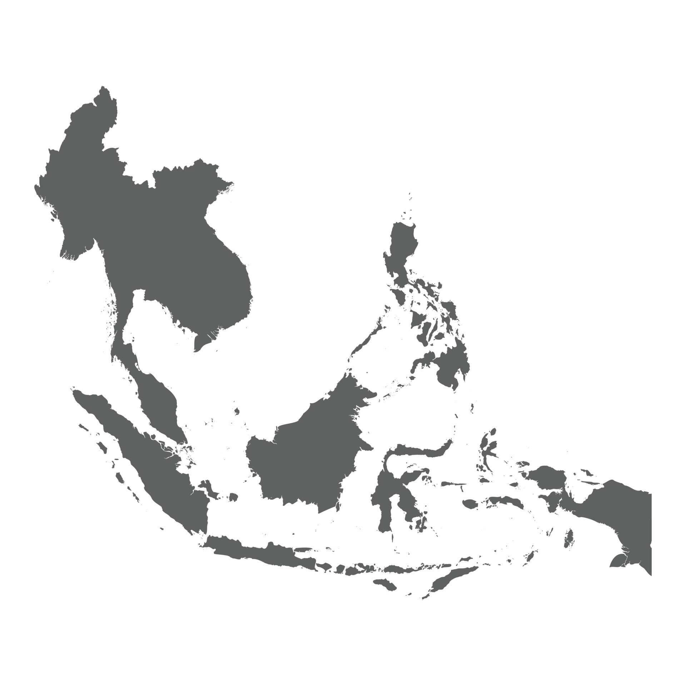
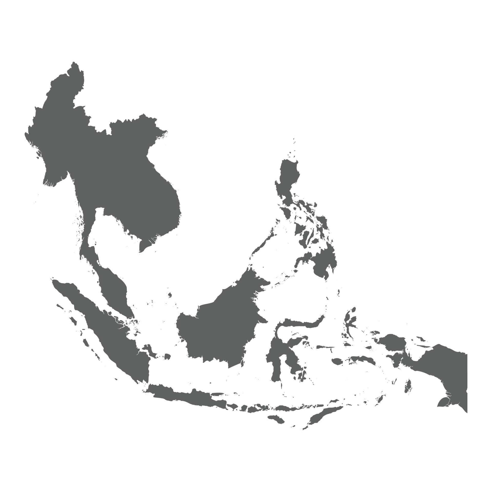

Blueberries are indigenous to North America, where they have been consumed by native peoples for centuries.


Blackberries, growing in various regions globally, especially Europe, have been foraged and cultivated for centuries, valued for their rich flavor and nutritional benefits.


Plums have diverse origins, with varieties developing in the Caucasus, Europe, and China, each with unique characteristics.

Figs, one of the oldest cultivated fruits, originated in Western Asia and the Middle East and are celebrated for their sweet taste and unique texture.

Grapes have been cultivated for thousands of years in the Near East, including regions like modern-day Turkey, Armenia, and Iran.

Elderberries, native to Europe, North Africa, and Western Asia, have been used for their medicinal properties and as a food source since ancient times.

Mulberries, native to China, have been cultivated since ancient times, valued for their sweet fruit and leaves used in silkworm cultivation.
Purple cabbage, also known as Red Cabbage with its striking color and robust flavor, is a variant of the common cabbage, which originated in Europe and the Mediterranean region. This vegetable, a member of the Brassica family, has been cultivated since ancient times, with the purple variety being prized for its vibrant color, resulting from a high concentration of anthocyanin pigments. Over centuries, purple cabbage has been used not only as a food source but also for its medicinal properties and even as a natural dye.
 

Eggplant, native to South and East Asia, has been cultivated in these regions since prehistoric times and was often used in traditional cuisines.

Purple carrots, with their striking color, are believed to be one of the earliest forms of carrots cultivated, with their origins tracing back to Central Asia, specifically regions like Afghanistan. These carrots were originally grown for their medicinal properties and vibrant colors, ranging from deep purple to black. Over centuries, purple carrots spread through the Middle East and the Mediterranean, eventually leading to the development of the orange carrots we are more familiar with today.

Acai berries, native to the Amazon Rainforest, have been a vital part of the indigenous diet for centuries, known for their health benefits.
Prassion Fruit is native to South America, particularly Brazil, Paraguay, and Argentina, passion fruit is known for its aromatic flavor and was widely used by indigenous tribes.